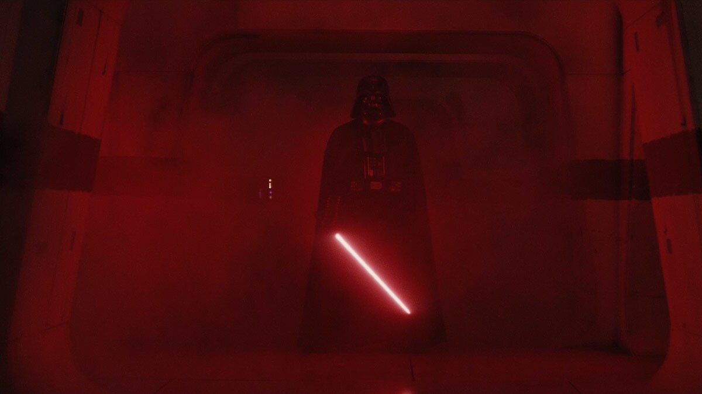

Welcome to the Holocron
This website explores some of the most memorable characters, planets, factions, and stories from the Star Wars universe. Use the navigation above to begin your journey.

Darth Vader
Characters
Explore famous Jedi, Sith, heroes, villains, and other important figures from the Star Wars galaxy.
View CharactersPlanets
Visit iconic locations such as Tatooine, Coruscant, Hoth, and other important worlds.
Explore PlanetsHolocron Knowledge
This holocron is currently filled with information about the galaxy.